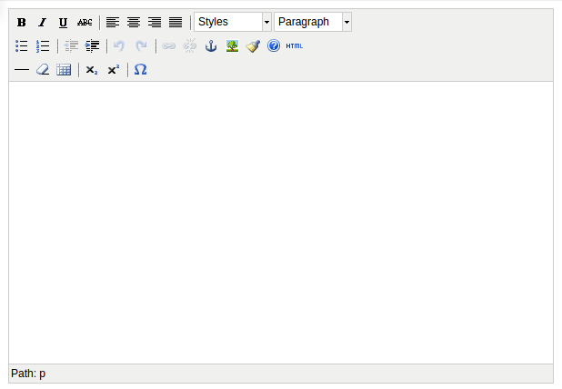

富文本编辑器
- 借助富文本编辑器，管理员能够编辑出来一个包含html的页面，从而页面的显示效果，可以由管理员定义，而不用完全依赖于前期开发人员
- 此处以tinymce为例，其它富文本编辑器的使用可以自行学习
- 使用编辑器的显示效果为：

下载安装
- 在网站pypi网站搜索并下载"django-tinymce-2.4.0"
- 解压
tar zxvf django-tinymce-2.4.0.tar.gz
- 进入解压后的目录，工作在虚拟环境，安装
python setup.py install
应用到项目中
- 在settings.py中为INSTALLED_APPS添加编辑器应用
INSTALLED_APPS = (
...
'tinymce',
)
- 在settings.py中添加编辑配置项
TINYMCE_DEFAULT_CONFIG = {
'theme': 'advanced',
'width': 600,
'height': 400,
}
- 在根urls.py中配置
urlpatterns = [
...
url(r'^tinymce/', include('tinymce.urls')),
]
- 在应用中定义模型的属性
from django.db import models
from tinymce.models import HTMLField
class HeroInfo(models.Model):
...
hcontent = HTMLField()
- 在后台管理界面中，就会显示为富文本编辑器，而不是多行文本框
自定义使用
- 定义视图editor，用于显示编辑器并完成提交
def editor(request):
return render(request, 'other/editor.html')
- 配置url
urlpatterns = [
...
url(r'^editor/$', views.editor, name='editor'),
]
- 创建模板editor.html
<!DOCTYPE html>
<html>
<head>
<title></title>
<script type="text/javascript" src='/static/tiny_mce/tiny_mce.js'></script>
<script type="text/javascript">
tinyMCE.init({
'mode':'textareas',
'theme':'advanced',
'width':400,
'height':100
});
</script>
</head>
<body>
<form method="post" action="/content/">
<input type="text" name="hname">
<br>
<textarea name='hcontent'>哈哈，这是啥呀</textarea>
<br>
<input type="submit" value="提交">
</form>
</body>
</html>
- 定义视图content，接收请求，并更新heroinfo对象
def content(request):
hname = request.POST['hname']
hcontent = request.POST['hcontent']
heroinfo = HeroInfo.objects.get(pk=1)
heroinfo.hname = hname
heroinfo.hcontent = hcontent
heroinfo.save()
return render(request, 'other/content.html', {'hero': heroinfo})
- 添加url项
urlpatterns = [
...
url(r'^content/$', views.content, name='content'),
]
- 定义模板content.html
<!DOCTYPE html>
<html>
<head>
<title></title>
</head>
<body>
姓名：{{hero.hname}}
<hr>
{%autoescape off%}
{{hero.hcontent}}
{%endautoescape%}
</body>
</html>